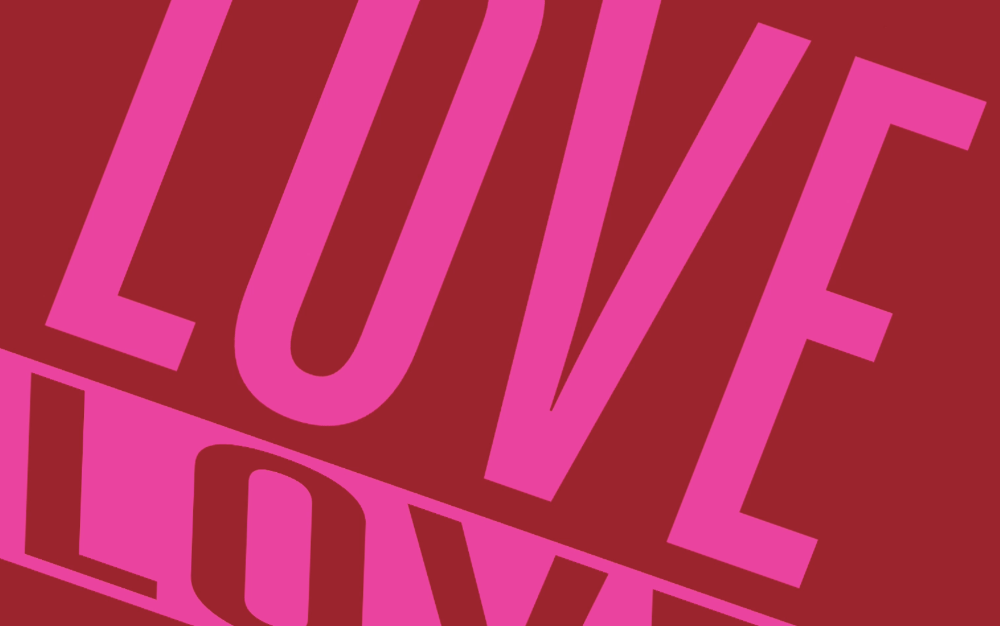
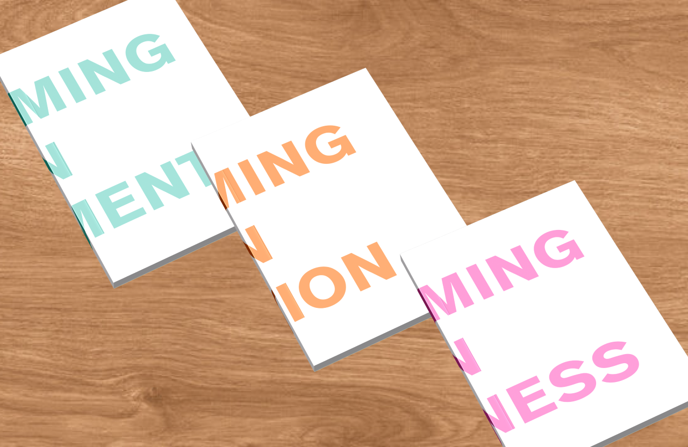
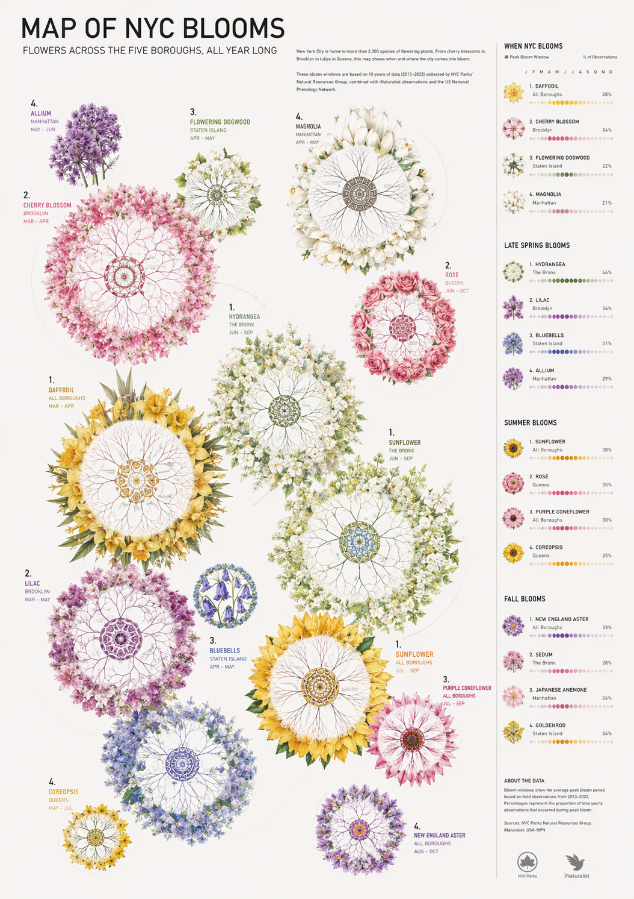

Trace
Exploring the relationship between movement and space through computer vision.
Creative Coding · Web · Motion

Typographic Experimentation
Exploring the relationship between typography and movement.
Motion · Typography · Web
Breathe
A visual meditation on stillness and space.
UI/UX · App Design · Creative Coding

Disconnect
Put the phone down. Let something grow.
Print · Interactive · Motion

Flower Poster
Poster exploration developed as part of Disconnect.
Poster · Data Visualisation · Print